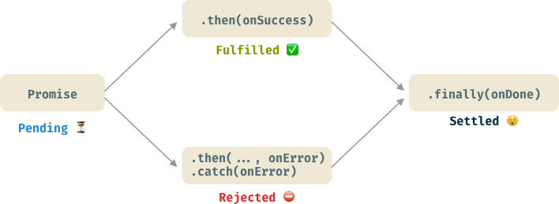
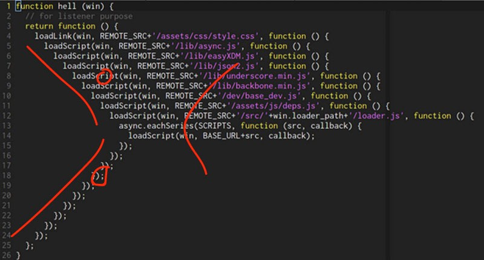

Promises
-
The Promise object represents the eventual completion (or failure)
of an asynchronous operation, and its resulting value.
-
Promises allow us to write callbacks in a linear or serial manner
and avoid "Callback Hell"
-
It returns a temporary proxy value for something not known when the
promise is created.
-
It allows you to associate handlers with an asynchronous action's
eventual success value or failure reason.
Promises can exist in four states:
-
⏳ Pending: initial state. Async operation is still in process.
-
✅ Fulfilled: the operation was successful. It invokes .then
callback. E.g., .then(onSuccess).
-
⛔️ Rejected: the operation failed. It invokes the .catch or .then
‘s second argument (if any). E.g., .catch(onError) or .then(...,
onError)
-
😵 Settled: it’s the promise final state. The promise is dead.
Nothing else can be resolved or rejected anymore. The .finally
method is invoked.
Process Diagram

Promises explained
Promises Provide a Placeholder for a Future Value
function futureValue(x) {
return wait(x, 5000)
}
function wait(value, time) {
return new Promise(function(resolve, reject) {
setTimeout(() => {
console.log(`done after ${time/1000} seconds`)
return resolve(value)
}, time)
})
}
let test = futureValue('test')
What's a Callback Again?
-
Any function that is executed at some indeterminate time after
initial page render (Window Mounting).
-
Usually callbacks are passed as a parameter in
another function that is invoked by some user triggered Event
// Not always user generated, though
// just displaced in time from initial Mount
let callback = val => console.log(val)
setTimeout(callback('finally'), Math.random()*10_000)
document.addEventListener('click', callback)
Callback Hell is a terrible place

function callbackHell(🔥) {
🔥 return function() {
🔥🔥 callback1(🔥, function() {
🔥🔥🔥 callback2(🔥, function() {
🔥🔥🔥🔥 callback3(🔥, function() {
🔥🔥🔥🔥🔥 callback4(🔥, function() {
🔥🔥🔥🔥🔥🔥 callback5(🔥, function(src, callback) {
🔥🔥🔥🔥🔥🔥🔥 finally(src, callback)
🔥🔥🔥🔥🔥🔥 })
🔥🔥🔥🔥🔥 })
🔥🔥🔥🔥 })
🔥🔥🔥 })
🔥🔥 })
🔥 }
}
Callback Hell to Promises
a(() => {
b(() => {
c(() => {
d(() => {
// and so on ...
})
})
})
})
Promise.resolve()
.then(a)
.then(b)
.then(c)
.then(d)
.catch(console.error)
Synchronous vs Asynchronous
console.log('First')
console.log('Second')
console.log('Third')
console.log('First')
fetch('https://example.com')
.then(() => console.log("Second"))
console.log('Third')
Handling resolve & reject with then & catch
let futureValue = (value) => new Promise((resolve, reject) => {
setTimeout(() => {
console.log(`done after 3 seconds`)
if(typeof value === 'string') {
return resolve(value)
} else {
return reject('error: must be a string')
}
}, 3000)
})
let test = futureValue('test')
.then(response => console.log(response))
let test1 = futureValue(5)
.then(response => console.log(response))
.catch(err => console.log(err))
//notice console.error isn't invoked when we use .catch
Why Structure it this way?
- Event-based Nature of user input
- Procedural vs. Declarative
let tweets = loadDataSync(data)
// ...Waiting for enough time to pass
// Do something with the data
setTimeout(data.filter(...), delay)
doSomeOtherThings()
loadDataAsync(function (data) {
// ... Ready to use the data
// ... no matter when it arrives
data.filter(() => ...)
})
doSomeOtherThings()
Async/Sync
medium
Event Loop Video
What is the Event Loop?
Event Loop
Tasks, task queue & the main thread
Blocking or Non-Blocking?
function futureValue(x = 'test', iter = 1_000) {
let promise = wait(x, iter)
return promise;
}
function wait(value, iterations) {
console.time(value)
return new Promise(function(resolve, reject) {
if(iterations < 0) {
return reject('error: failed @ ' + value)
}
let num
for(let i = 0; i <= iterations ** 2; i++) {
num = i ** 2
if(i === iterations ** 2) {
console.timeEnd(value)
return resolve(value)
}
}
})
}
let test = futureValue()
Blocking or non Blocking?
console.log('begin the program')
console.time('program')
noBlocking(500, function (j, end) {
if(end) {
console.log(`0 -> ${j}`)
console.timeEnd('program')
}
})
function noBlocking(n, callback){
var i = 0
function loop () {
if (i < n) {
i++;
callback(i, false)
window.requestAnimationFrame(loop)
}
else callback(i, true)
}
loop()
}
Promises Animation Code Along
Animating a multi-step Spinner
Our First Peak at Fetch
fetch is a Promise that accepts a URL, then makes an HTTP
request to that resource and asynchronously returns with a data
payload
let f = fetch('https://jsonplaceholder.typicode.com/todos')
// We call .then on it:
f.then(response => response.json())
// the .json() method is built into the fetch API, for formatting response data into JSON format
.then(data => console.log(data))
Primer on JSON
- Javascript Object Notation (Counterpart to XML format)
- Universal data payload format for the Web
{"menu": {
"id": "file",
"value": "File",
"popup": {
"menuitem": [
{"value": "New", "onclick": "CreateNewDoc()"},
{"value": "Open", "onclick": "OpenDoc()"},
{"value": "Close", "onclick": "CloseDoc()"}
]
}
}}
The JSON object
JSON.stringify()
JSON.parse()
Not Fetching JSON?
Instead of response.json(), use
response.text()
The Response Methods
fetching text
XML libraries
Let's have a look in the console at what this does
let f = fetch('https://jsonplaceholder.typicode.com/todos')
// We call .then on it:
f.then(response => response.json())
// the .json() method is built into the fetch API, for formatting response data into JSON format
.then(data => console.log(data))
Promise.all()
Legacy XHR Syntax
XMLHttpRequest
Go Make Things Site
Polyfills for Internet Explorer
Fetch Polyfill
Promises Polyfill
async / await
Another way to write promises
Writing A Curried Fetch Utility
var f = protocol => domain => path => fetch(protocol+domain+path).then(r =>r.json()).then(d=> console.log(d))
var prot = f('https://')
var dom = p('jsonplaceholder.typicode.com/')
var todos = dom('todos')
var firstTodo = dom('todos/1')
var users = dom('users')
Code Along with Public APIs
Public APIs Github Resource
Let's make a User Fetching App
User Manager App starter
- Add more cross functionality to your app
- Or start a whole new one!
-
Set your github settings in your usr-mgr repo to expose it on your
portfolio